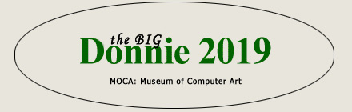

THIS CONTEST CLOSED TO NEW ENTRANTS
View all Donnie 2019 entries
View entries from beginning
Stefan Arteni
Clay Bodvin
Russell Cleversley
Andrew Cole
Bjoern Daempfling
Roger Gottlieb
Raya Grinberg
Adonis Halepianos
Allen Hirsh
John Hughson
Susan Kaprov
Sherry Karver
Dolores Kaufman
Nina Koelman
Beverly LaRock
Chalda Maloff
Nicholas McCumber
Kazmier Maslanka
Randy Morris
Joe Nalven
Peach Pair
Sibel Sancar
Steve Schlesinger
Marion Schmitz
Monica Malbeck Schut
Harshad Shah
Renata Spiazzi
Gina Topping
Pauline van de Ven
Diane Vetere
Wil Watty
Rod Whyte
(listed in alphabetical order by artist's last name)
or go to entries (below)
Wheel of Life
What a Notion Looks Like
Waiting at the Bottom of the Stairs
Scream for Justice
Woman of the Forest
Weak Side Block
Sepiroth
Bread Box
Pastoral
Space Trip
The Hall of Faith
Walking
Black Swan
Flight on Daylight
Zodiac Pisces
An Evolution of Nematodes
An Exotic Brusselator
A Zinnia from the Heart
Landscape on a Distant Planet
Motie's Broken Blues Cafe
Transcendental Scallops
Untitled
Untitled 1
State of the World
Word of Mouth
Visiting Apparition
No Place to Hide Triptych
Ausrichtung (Orientation)
Gerahmtes Dreieck (Framed Triangle)
Hinter der Mauer (Behind the Wall)
ohne Titel 1
ohne Titel 2
Verwirrung (Confusion)
Forward and Backward
Who Am I?
Listen Only Footprints
A Capella
Digiteze
Digiteze 3
Digiteze 8
Digiteze 17
Digiteze 18
Digiteze 19
The Moment of Chun Jin Sunim
Orbis Aquarium
Valentine 2018
Maelstrom
Broken Symmetry
Study for Lost Cafe: Flare Star
Portrait in the 21st Century
Portrait in the 22nd Century
The Orchard
Milkweed Pods
Inside a Dream
Autumn Feelings
x286
x895
x980
Aetna
Mirror 001
ohne Titel
Splash 001
My Love Dance
Crazy About You
Dance Dance Dance
Free Before Being Free
Everybody Loves Me
Sundancers
Never Listen Any Bad
This Is Not a Way to Oppose
We Are Happy and Safe Here
Navajo Sunset
Desert Flowers
Suicide
Vermeer Deconstructed
Fugitive
There's Nothing There
The Cuddle
The Coalface
The Frame is Paramount
Winter's End
Unrest
Ribbons 3
Paris Dreams
Visage
I've Got a Bonner
The Implant
Poor Treats
Perspective
Winter Bloom